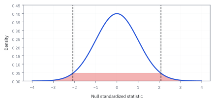
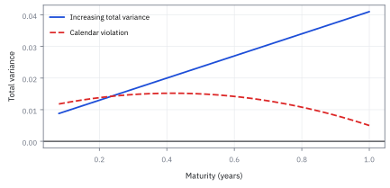
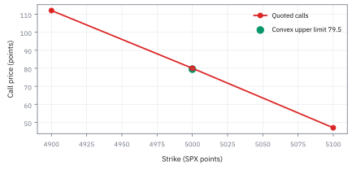

14.5 The Volatility Surface and Term Structure
implied volatility ของทุก strike และทุกอายุต่อกันเป็นผืนเดียว ต้องเชื่อมข้ามอายุบน total variance ที่บวกกันได้ตามเวลา และผืนต้องผ่านกฎสองข้อจึงไม่มีเงินฟรี
ลูกค้าโทรมาที่โต๊ะเทรด option ขอราคา call option บนดัชนี S&P 500 อายุ 2 เดือน call option คือสัญญาที่ให้สิทธิ์ (ไม่ใช่หน้าที่) ซื้อดัชนีในวันหมดอายุ ที่ราคาซึ่งตกลงกันไว้ ราคาตกลงนี้เรียกว่า strike ถ้าวันนั้นดัชนีสูงกว่า strike ผู้ถือได้ส่วนต่าง ถ้าต่ำกว่า ได้ศูนย์
ปัญหาคือตลาดไม่มี call อายุ 2 เดือนให้ดู มีแค่อายุ 1 เดือนกับอายุ 3 เดือน โต๊ะจึงต้องหาค่ากลางจากสองอายุนี้เอง และต้องหาให้ถูก
ตลาดไม่ได้บอกราคา option เป็นเงินตรง ๆ แต่บอกเป็น implied volatility คือความผันผวนต่อปีที่ใส่ในสูตร Black–Scholesแล้วได้ราคาตลาดพอดี (ความผันผวนคือขนาดการแกว่งของราคา วัดเป็น SD ของผลตอบแทนต่อปี) ดัชนี S&P 500 เรียกย่อว่า SPX และนับราคาเป็น “จุด” ของที่รู้มีดังนี้
- ดัชนีวันนี้ $S_0=5{,}000$ จุด
- ดอกเบี้ย $r=4\%$ ต่อปี
- อัตราปันผล $q=1.5\%$ ต่อปี คือเงินปันผลที่หุ้นในดัชนีจ่าย คิดเป็นสัดส่วนของราคาต่อปี
- call อายุ 1 เดือน มี implied volatility $\sigma_1=30\%$ ต่อปี
- call อายุ 3 เดือน มี implied volatility $\sigma_3=24\%$ ต่อปี
- call ทั้งสองอายุ และ call อายุ 2 เดือนที่ลูกค้าขอ มี strike เท่ากับ forward ของอายุตัวเอง forward คือราคาที่ยุติธรรมถ้าตกลงวันนี้ว่าจะซื้อดัชนีในวันหมดอายุ (สูตรอยู่ในขั้นตั้งแกนด้านล่าง)
- สัญญาหนึ่งสัญญามีตัวคูณ \$100 ต่อจุด ราคา 1 จุดจึงเท่ากับ \$100
เทรดเดอร์ฝึกหัดเห็นว่า 2 เดือนอยู่กึ่งกลางระหว่าง 1 เดือนกับ 3 เดือน จึงเฉลี่ยตรง ๆ
คิดแบบนี้ถูกไหม ถ้าผิด ผิดเป็นเงินกี่ดอลลาร์ต่อสัญญา?
ลองตอบก่อนเปิดเฉลย
ผิด ของที่บวกกันได้ตามเวลาคือ variance คูณเวลา ไม่ใช่ความผันผวน (variance คือ SD ยกกำลังสอง) เหตุผลอยู่ในขั้นลองด้วยมือด้านล่าง ตอนนี้ดูตัวเลขก่อน ให้ $w=\sigma^2T$ คือ variance ทั้งหมดตลอดอายุ $T$ ปี เรียกว่า total variance เพราะ 2 เดือนอยู่กึ่งกลางเวลา จึงเฉลี่ย $w$ ของสองอายุ ไม่ใช่เฉลี่ย $\sigma$
ค่าที่ถูกคือ 25.63% ไม่ใช่ 27% ใส่สองค่านี้ในสูตร Black–Scholes ได้ราคา call อายุ 2 เดือน 208.11 จุดกับ 219.21 จุด (ขั้นเชื่อมอายุ 2 เดือนด้านล่างคำนวณให้ดู) ราคาที่ 27% จึงแพงไป
ต่อสัญญา และถ้าอายุ 3 เดือนเป็น 18% แทน การเฉลี่ยตรง ๆ แบบเดียวกันจะให้ราคาที่เปิดช่องให้คู่ค้าได้เงินฟรีเลย (ขั้นเชื่อมบนความผันผวนตรง ๆ ด้านล่าง)
ภาพรวมก่อนลงสูตร
ตลาดซื้อขาย option หลายร้อยสัญญาบนดัชนีเดียวกัน แต่ละสัญญามีคู่ strike กับอายุของตัวเอง และมีราคาของตัวเอง ราคาเป็นเงินเทียบกันข้ามสัญญาได้ยาก เพราะ strike ต่างกันราคาก็ต่างกันอยู่แล้ว โต๊ะจึงแปลงแต่ละราคาเป็น implied volatility ได้ตัวเลขหนึ่งตัวต่อหนึ่งคู่ strike กับอายุ
วางตัวเลขเหล่านี้บนตาราง แกนหนึ่งคือ strike อีกแกนคืออายุ จะได้ผืนที่เรียกว่า volatility surface (ผืนความผันผวน) ถ้าแบบจำลอง Black–Scholes ถูก ทุกสัญญาต้องมาจากความผันผวนค่าเดียวกัน ผืนจึงต้องแบนราบและไม่ขยับตามวัน แต่ผืนจริงไม่แบน และขยับทุกวัน
- ตามแกน strike: strike ต่ำมีความผันผวนสูงกว่า strike สูง รูปนี้เรียกว่า skew (หรือ smile ถ้าโค้งขึ้นทั้งสองข้าง) มันเอียงชันที่สุดที่อายุสั้น
- ตามแกนอายุ: ความผันผวนเพิ่มหรือลดตามอายุก็ได้ แล้วค่อย ๆ เข้าหาค่าคงที่เมื่ออายุยาวมาก รูปนี้เรียกว่า term structure วันที่ตลาดเครียด อายุสั้นแพงกว่าอายุยาวมาก จนเส้นลาดลงแทนที่จะลาดขึ้น เรียกว่าเส้นหัวกลับ
แม้รู้ว่าแบบจำลองผิด ทุกโต๊ะยังใช้สูตร Black–Scholes คำนวณผืนนี้และ Greeks (ตัวเลขที่บอกว่าราคา option เปลี่ยนเท่าไรเมื่อตัวแปรหนึ่งขยับ) คนในตลาดพูดว่า “ใส่ตัวเลขผิดลงในสูตรผิด เพื่อให้ได้ราคาที่ถูก” ความหมายคือ สูตรไม่ได้ใช้ทำนายอะไร มันแค่แปลงราคาเป็นหน่วยเดียวกันที่เทียบข้าม strike และอายุได้
หน้านี้สร้างสามอย่าง
- วิธีเชื่อมค่าระหว่างสองอายุให้ถูก ซึ่งตอบคำถามของลูกค้าข้างบน
- กฎสองข้อที่ผืนต้องผ่าน ถ้าไม่ผ่าน คู่ค้าจะได้เงินฟรีจากราคาของเรา
- ขอบเขตของผืน: สัญญาแบบไหนตั้งราคาจากผืนได้ และแบบไหนตั้งไม่ได้
สองรูปข้างล่างวาดผืนสมมติของหน้านี้ (ไม่ใช่ข้อมูลตลาด สูตรของมันอยู่ในขั้นตรวจผืนทั้งผืนด้านล่าง) รูปแรกหั่นผืนตามอายุ แต่ละเส้นคือ skew ของอายุนั้น รูปที่สองหั่นตาม strike แต่ละเส้นคือ term structure ของ strike นั้น
รูป — ผืนความผันผวนหั่นเป็นชิ้นตามอายุ
รูป — ผืนเดียวกันหั่นตาม strike: term structure
ศัพท์ที่ใช้ในหัวข้อนี้
- Call, put, strike และอายุ
- call คือสิทธิ์ซื้อ put คือสิทธิ์ขาย ที่ราคาตกลง (strike) ในวันหมดอายุ อายุคือเวลาจากวันนี้ถึงวันหมดอายุ นับเป็นปี
- Forward
- ราคาที่ยุติธรรมถ้าตกลงวันนี้ว่าจะซื้อดัชนีในวันหมดอายุ คือ $F=S_0e^{(r-q)T}$ ใช้เป็นจุดกลางของแต่ละอายุ
- Implied volatility
- ความผันผวนที่ใส่ในสูตร Black–Scholes แล้วได้ราคาตลาดพอดี หาได้โดยแก้สมการ ราคาตลาด = ราคาจากสูตร ใช้แปลงราคา option เป็นหน่วยเดียวที่เทียบข้าม strike และอายุได้
- Volatility surface, skew และ smile
- volatility surface คือ implied volatility ของทุก strike ทุกอายุ วางเป็นผืนเดียว skew หรือ smile คือรูปของผืนตามแกน strike ที่อายุเดียว หุ้นและดัชนีมักเอียงให้ strike ต่ำมีความผันผวนสูงกว่า ผืนใช้อ่านราคาของสัญญาที่ไม่มีคนซื้อขาย
- Term structure
- implied volatility ที่ strike เดียว เทียบตามอายุ วันปกติมักเพิ่มตามอายุ วันตลาดเครียด อายุสั้นแพงกว่าจนเส้นลาดลง (หัวกลับ) ใช้อ่านว่าตลาดคาดว่าช่วงไหนจะแกว่งแรง
- Total variance และ forward variance
- total variance $w=\sigma_{\rm imp}^2T$ คือ variance ของ log ราคาตลอดอายุ มันบวกกันได้ตามเวลา จึงเป็นแกนที่ใช้เชื่อมข้ามอายุ forward variance คือ variance ต่อปีของช่วงระหว่างสองอายุ หรือความชันของ $w$ ตามอายุ มันติดลบไม่ได้
- Vega
- ราคา option เปลี่ยนเท่าไรเมื่อความผันผวนเพิ่ม 1.00 (คือเพิ่ม 100 จุดความผันผวน) เป็นบวกเสมอ
- Arbitrage, calendar และ butterfly
- arbitrage คือเงินฟรี: ได้เงินวันนี้หรือไม่ต้องลงทุน แล้วไม่มีทางขาดทุน calendar arbitrage เกิดเมื่อ option อายุยาวถูกกว่าอายุสั้น ที่ strike ห่างจาก forward เท่ากัน butterfly arbitrage เกิดเมื่อพอร์ต butterfly (ซื้อ call สอง strike ริม ขาย call strike กลางสองใบ) มีราคาติดลบ ทั้งสองแบบล็อกกำไรได้โดยซื้อแล้วถือไว้เฉย ๆ จึงเรียกว่า static arbitrage
- Risk-neutral measure และ density
- risk-neutral measure $\mathbb Q$ คือชุดโอกาสที่ใช้ตั้งราคา ภายใต้ชุดนี้ ราคาวันนี้ของสัญญาใด ๆ เท่ากับค่าเฉลี่ยของเงินที่สัญญาจ่าย คิดลดด้วยดอกเบี้ย density คือโอกาสต่อหนึ่งหน่วยราคา ว่าราคาปลายทางจะจบแถวไหน
- Digital, range accrual และ exotic option
- digital จ่ายเงินก้อนคงที่ถ้าราคาจบเหนือ strike range accrual จ่ายตามจำนวนวันที่ราคาอยู่ในช่วงที่กำหนด exotic option คือสัญญาที่มีเงื่อนไขพิเศษ เช่น knock-in put ที่มีผลเฉพาะเมื่อราคาไปถึงระดับที่ตกลงไว้ก่อน ผืนความผันผวนตั้งราคาสัญญาที่ขึ้นกับเส้นทางของราคาไม่ได้ ต้องมีแบบจำลองของเส้นทางเพิ่ม
สัญลักษณ์และหน่วย
| สัญลักษณ์ | ความหมาย | หน่วย |
|---|---|---|
| $S_0,\ S_T,\ K$ | ราคาดัชนีวันนี้ ราคาดัชนีในวันหมดอายุ และ strike | จุด |
| $T,\ r,\ q$ | อายุ ดอกเบี้ย และอัตราปันผล | ปี, ต่อปี, ต่อปี |
| $F(T)$ | forward สำหรับอายุ $T$ คือ $S_0e^{(r-q)T}$ | จุด |
| $k,\ x$ | log-moneyness $\ln(K/F)$ และอัตราส่วน $K/F$ | ไม่มีหน่วย |
| $\sigma_{\rm imp}(k,T),\ w(k,T)$ | implied volatility และ total variance $\sigma_{\rm imp}^2T$ | ต่อรากที่สองของปี, ไม่มีหน่วย |
| $T_1,\ T_2,\ v_{12}$ | อายุสั้น อายุยาว และ forward variance ต่อปีระหว่างสองอายุ | ปี, ปี, ต่อปี |
| $D,\ c(x,T)$ | discount factor $D=e^{-rT}$ คือมูลค่าวันนี้ของ \$1 ที่ได้ ณ $T$ และราคา call หารด้วย $DF$ คือราคาวัดเป็นสัดส่วนของ forward | ไม่มีหน่วย |
| $\nu,\ \Phi,\ \phi$ | vega, CDF และ density ของ Normal มาตรฐาน | จุดต่อความผันผวน 1.00, ไม่มีหน่วย |
| $C_K,\ C_{KK}$ | อนุพันธ์ครั้งแรกและครั้งที่สองของราคา call เทียบ strike | ไม่มีหน่วย, ต่อจุด |
| $f^{\mathbb Q}(K)$ | density ของราคาปลายทาง $S_T$ ภายใต้ risk-neutral measure ที่ระดับ $K$ | ต่อจุด |
| $V,\ E,\ D_{\rm debt}$ | มูลค่าบริษัท มูลค่าหุ้น และมูลค่าหนี้ | ดอลลาร์ |
ขั้นที่ 1 — implied volatility คือคำตอบเดียวของสมการราคา
ผืนประกอบจากจุดจำนวนมาก แต่ละจุดคือ implied volatility หนึ่งค่า ก่อนจะต่อจุดเป็นผืน ต้องรู้ก่อนว่าแต่ละจุดหามาอย่างไร และทำไมจึงมีคำตอบเดียว
ให้ $C_{\rm mkt}(K,T)$ คือราคาตลาดของ call strike $K$ อายุ $T$ และ $C_{\rm BS}(K,T,\sigma)$ คือราคาจากสูตร Black–Scholes เมื่อใส่ความผันผวน $\sigma$ implied volatility $\sigma_{\rm imp}$ คือค่า $\sigma$ ที่ทำให้สองราคานี้เท่ากัน
สมการนี้แก้เป็นสูตรปิดไม่ได้ จึงต้องแก้ด้วยตัวเลขทีละจุด
โจทย์ให้อะไรมาบ้าง: call บน SPX หนึ่งสัญญา
- strike $K=5{,}000$ จุด
- อายุ $T=0.25$ ปี (3 เดือน)
- ราคาตลาด $C_{\rm mkt}=250$ จุด
- ดัชนี ดอกเบี้ย และปันผลเหมือนใน hook: $S_0=5{,}000$, $r=4\%$, $q=1.5\%$
วิธีหาคือแบ่งครึ่งช่วง เริ่มจากช่วง 20% ถึง 30% แล้วลองค่ากลางของช่วง ถ้าสูตรให้ราคาแพงกว่า 250 แปลว่าความผันผวนสูงไป จึงตัดครึ่งบนทิ้ง ถ้าถูกกว่า ตัดครึ่งล่างทิ้ง ทำซ้ำจนช่วงแคบพอ
ก่อนลอง ดูขอบสองข้างก่อน ถ้าความผันผวนเป็นศูนย์ ดัชนีไม่แกว่ง มันจะไปจบที่ forward แน่นอน call จึงจ่าย forward ลบ strike แน่นอน คิดลดมาเป็นวันนี้ได้ $S_0e^{-qT}-Ke^{-rT}$ ถ้าความผันผวนโตไม่จำกัด ราคา call เข้าใกล้มูลค่าของตัวดัชนีเอง (หักปันผล) แต่ไม่เกิน เพราะ call จ่ายไม่เกินราคาดัชนีเสมอ
สี่ค่าที่ลองคือค่ากลางของช่วงที่หดลงทีละครึ่ง 25% แพงไป ช่วงจึงเหลือ 20% ถึง 25% ค่ากลาง 22.5% ถูกไป ช่วงเหลือ 22.5% ถึง 25% ค่ากลาง 23.75% แพงไปนิด ช่วงเหลือ 22.5% ถึง 23.75% ค่ากลาง 23.125% ถูกไป ทำต่ออีกราว 20 รอบ ช่วงก็แคบจนอ่านได้ 23.653%
คำตอบ: implied volatility ของ call นี้คือ 23.65% ทำไมคำตอบมีค่าเดียว: ราคาจากสูตรเพิ่มขึ้นเสมอเมื่อความผันผวนเพิ่ม เพราะ vega (อัตราที่ราคา option เปลี่ยนเมื่อความผันผวนเปลี่ยน ดูหน้า Greeks) เป็นบวก ราคาจึงไต่จาก 31.04 จุดที่ความผันผวนศูนย์ ขึ้นไปเรื่อย ๆ จนเข้าใกล้ 4,981.29 จุด เส้นที่ขึ้นตลอดตัดเส้นราคาตลาดได้ครั้งเดียว ดังนั้นราคาตลาดใดที่อยู่ระหว่างสองขอบนี้ มี implied volatility หนึ่งค่าพอดี ถ้าราคาตลาดหลุดขอบ ราคานั้นเปิดช่องเงินฟรีอยู่แล้ว
ตรวจเองใน 10 วินาที: ลองวิธีของ Newton แทนการแบ่งครึ่ง คือเดินจากค่าที่ลองไปตามความชันของเส้นราคาหนึ่งก้าว ความชันคือ vega $\nu=S_0e^{-qT}\phi(d_1)\sqrt T$ ($\phi$ คือ density ของ Normal มาตรฐาน)
ก้าวเดียวก็ตกที่คำตอบ เพราะราคา call ที่ strike ใกล้ forward แทบเป็นเส้นตรงตามความผันผวน (ดูรูปถัดไป)
รูป — ราคาจากสูตรขึ้นตามความผันผวน จึงตัดราคาตลาดครั้งเดียว
ขั้นที่ 2 — ลองด้วยมือ: variance บวกกันได้ ความผันผวนบวกไม่ได้
คำถามของลูกค้าคือการเชื่อมสองอายุเข้าด้วยกัน ก่อนจะเขียนกฎ ลองตัวอย่างเล็ก ๆ ก่อนว่า การแกว่งของช่วงเวลาสั้นหลายท่อนรวมกันเป็นการแกว่งของช่วงยาวได้อย่างไร
โจทย์ให้อะไรมาบ้าง: option อายุ 3 เดือนครอบเวลาสองท่อน คือเดือนแรก กับเดือนที่สองถึงสาม สมมติว่า
- เดือนแรก ดัชนีแกว่งด้วยความผันผวน 30% ต่อปี (เท่ากับ implied volatility อายุ 1 เดือนใน hook)
- สองเดือนถัดไป ดัชนีแกว่งด้วยความผันผวนคงที่ $\sigma_f$ ต่อปี ซึ่งยังไม่รู้
- ตลาดบอกว่าทั้ง 3 เดือนรวมกันมีความผันผวน 24% ต่อปี (implied volatility อายุ 3 เดือน)
คำถามคือ $\sigma_f$ เท่าไร
ให้ $\operatorname{Var}_{a\to b}$ คือ variance ของการเปลี่ยนแปลงของ log ราคา จากสิ้นเดือนที่ $a$ ถึงสิ้นเดือนที่ $b$ ถ้าราคาแกว่งด้วยความผันผวน $\sigma$ ต่อปีเป็นเวลา $T$ ปี variance นี้เท่ากับ $\sigma^2T$ การเปลี่ยนแปลงตลอด 3 เดือนคือผลบวกของการเปลี่ยนแปลงสองท่อน และก้อนสุ่มของสองช่วงที่ไม่ทับกันเป็นอิสระต่อกัน (สามสมบัติของ Brownian motion) variance ของผลบวกจึงเท่ากับผลบวกของ variance
คำตอบ: สองเดือนหลังต้องแกว่งแค่ 20.35% ต่อปี ลองตรวจว่าการเฉลี่ยความผันผวนตามสัดส่วนเวลาให้ 24% ไหม เดือนแรกกินเวลา 1 ใน 3 สองเดือนหลังกิน 2 ใน 3
ได้ไม่ถึง 24% การเฉลี่ยความผันผวนจึงใช้ไม่ได้ ของที่รวมกันได้ตรง ๆ คือ variance คูณเวลา
ตรวจเองใน 10 วินาที: ใส่ $\sigma_f^2$ กลับเข้าไป $0.0075+0.0414\times\tfrac{2}{12}=0.0075+0.0069=0.0144=0.24^2\times\tfrac{3}{12}$ ตรงกับอายุ 3 เดือน แล้วทำไม 20.35% ต่ำกว่า 24% มาก: เดือนแรกที่แกว่ง 30% กิน variance ไปแล้ว $0.0075/0.0144=52\%$ ทั้งที่ใช้เวลาแค่หนึ่งในสาม สองเดือนที่เหลือจึงต้องแกว่งน้อย
ขั้นที่ 3 — แกนที่ถูกต้อง: forward, log-moneyness และ total variance
ตัวอย่างมือบอกว่า การเชื่อมข้ามอายุต้องทำบนปริมาณที่บวกกันได้ คือ variance คูณเวลา ขั้นนี้ตั้งแกนของผืนให้ตรงกับเรื่องนี้ และยังต้องแก้อีกเรื่องหนึ่ง strike เดียวกันมีความหมายต่างกันในแต่ละอายุ เพราะดอกเบี้ยและปันผลทำให้ “จุดกลาง” ของราคาปลายทางเลื่อนไปตามอายุ จุดกลางนี้คือ forward
forward $F(T)$ คือราคาที่ยุติธรรมถ้าตกลงวันนี้ว่าจะซื้อดัชนีที่เวลา $T$ ทำไมจึงเป็น $S_0e^{(r-q)T}$: ถ้ากู้เงินมาซื้อดัชนีวันนี้แล้วถือไว้ ต้องจ่ายดอกเบี้ยในอัตรา $r$ แต่ได้ปันผลในอัตรา $q$ ต้นทุนสุทธิจึงโตในอัตรา $r-q$ ราคาซื้อล่วงหน้าที่ไม่มีใครได้เปรียบต้องโตในอัตราเดียวกัน
จากนั้นวัด strike เทียบกับ forward ด้วย log-moneyness $k$ และเก็บ implied volatility ในรูป total variance $w$ ให้ $T_1\lt T_2$ เป็นสองอายุ และ $v_{12}$ เป็น variance ต่อปีของช่วงระหว่างสองอายุ สามสัญลักษณ์แรกข้างล่างเป็นนิยาม สมการท้ายคือตัวอย่างมือที่เขียนเป็นสูตรทั่วไป
ความคิดหลักคือ variance สะสมตามเวลา เหมือนระยะทางสะสมตามเวลา variance ทั้งหมดถึง $T_2$ เท่ากับ variance ถึง $T_1$ บวกส่วนของช่วงถัดไป ส่วนนั้นเขียนเป็นอัตราต่อปี $v_{12}$ คูณความยาวช่วง $T_2-T_1$ อัตรานี้เรียกว่า forward variance มันคือ variance ของช่วงหนึ่ง จึงติดลบไม่ได้ ผลที่ตามมาคือ total variance ต้องไม่ลดลงเมื่ออายุยาวขึ้น แต่ความผันผวนต่อปีลดลงได้ เพราะถ้า $\sigma$ ลดช้าพอ $w=\sigma^2T$ ยังโตได้จาก $T$ ที่โต
ทำไมวัด strike เทียบกับ forward ไม่ใช่กับราคาวันนี้ ดูอายุ 1 ปี forward คือ $F=5{,}000e^{(0.04-0.015)\times1}=5{,}000e^{0.025}=5{,}126.6$ จุด strike 5,000 เท่ากับราคาวันนี้ แต่ต่ำกว่า forward มันจึงอยู่ที่ $k=\ln(5{,}000/5{,}126.6)=-0.025$ ไม่ใช่ศูนย์ ถ้าวางทุกอายุบนแกน $k$ แล้ว $k=0$ ของทุกอายุจะหมายถึง strike เท่ากับ forward เหมือนกัน การเทียบข้ามอายุจึงเป็นการเทียบของชนิดเดียวกัน
ขั้นที่ 4 — เชื่อมอายุ 2 เดือนบน total variance
ตอนนี้มีเครื่องมือพอจะตอบลูกค้าใน hook แล้ว วิธีคือลากเส้นตรงบน $w$ ตามเวลา แล้วแปลงกลับเป็นความผันผวน
โจทย์ให้อะไรมาบ้าง:
- total variance อายุ 1 เดือน $w_1=0.0075$ และอายุ 3 เดือน $w_3=0.0144$ (คำนวณไว้ในตัวอย่างมือ)
- อายุที่ลูกค้าขอ $T=2/12$ ปี ที่ strike เท่ากับ forward
- ดัชนี ดอกเบี้ย และปันผลเหมือนใน hook
เส้นตรงระหว่างสองอายุ $T_1=1/12$ กับ $T_3=3/12$ คือ $w(T)=w_1+\dfrac{T-T_1}{T_3-T_1}(w_3-w_1)$ ที่ 2 เดือน น้ำหนักคือ $\dfrac{2/12-1/12}{3/12-1/12}=0.5$ จากนั้นใส่ความผันผวนที่ได้ และ 27% ของเทรดเดอร์ฝึกหัด ลงในสูตร Black–Scholes เพื่อเทียบราคา ($K=F$, $T=2/12$, $r=4\%$, $q=1.5\%$ ราคา call ทั้งสองค่าคำนวณด้วยโค้ดท้ายหน้า)
คำตอบ: ควรเสนอ 25.63% ไม่ใช่ 27% (27% ตรงกับ $w=0.27^2\times\tfrac{2}{12}=0.01215$ สูงกว่าค่าที่ถูก) ราคาที่ 27% แพงไป
ต่อสัญญา ตัวเลขนี้ตรวจด้วย vega ได้ ที่ 25.63% vega คือ 811 จุดต่อความผันผวน 1.00 (จากโค้ดท้ายหน้า) ส่วนต่างความผันผวนคือ $0.27-0.2563=0.0137$ ราคาจึงต่างกันราว $811\times0.0137=11.1$ จุด ตรงกับข้างบน ลูกค้าที่รู้เรื่องจะไม่ซื้อที่ราคานี้ และถ้าโต๊ะเป็นฝ่ายซื้อที่ 27% โต๊ะก็จ่ายแพงไปเท่านั้น
ตรวจเองใน 10 วินาที: $\sqrt{0.0657}=0.2563$ แล้วทำไม 25.63% อยู่ใกล้ 24% มากกว่า 30% เขียน $\sigma_2^2=w_2/T_2$ ใหม่ จะเห็นว่ามันคือค่าเฉลี่ยถ่วงของ $\sigma_1^2$ กับ $\sigma_3^2$
อายุ 3 เดือนได้น้ำหนัก 3 ใน 4 เพราะมันครอบเวลามากกว่า คำตอบจึงเอียงไปทาง 24%
รูป — ความผันผวนลดลงได้ ขณะที่ total variance เพิ่มขึ้น

ขั้นที่ 5 — เชื่อมบนความผันผวนตรง ๆ แล้วเกิดเงินฟรี
ในตัวอย่างที่แล้ว การเฉลี่ยตรง ๆ แค่ทำให้ราคาแพงไป ขั้นนี้แสดงว่าถ้าความผันผวนของสองอายุห่างกันมากพอ การเฉลี่ยตรง ๆ สร้างเงินฟรี (arbitrage) ให้คู่ค้าได้ เงินฟรีในที่นี้คือ คู่ค้าซื้อขายกับเราแล้วได้เงินวันนี้ โดยไม่มีทางขาดทุนภายหลัง
โจทย์ให้อะไรมาบ้าง:
- อายุ 1 เดือนยังเป็น 30% ($w=0.0075$ เหมือนเดิม)
- อายุ 3 เดือนเปลี่ยนเป็น 18% (สมมติ)
- เทรดเดอร์เฉลี่ยตรง ๆ ได้ $(30\%+18\%)/2=24\%$ ที่อายุ 2 เดือน
ตรวจได้สองทาง ทางแรกคือดู forward variance ของช่วง 2 ถึง 3 เดือน ทางที่สองคือเทียบราคา call ของสองอายุ ที่ strike เท่ากับ forward ของแต่ละอายุ แต่ราคาของสองอายุต้องอยู่ในหน่วยเดียวกันก่อน จึงหารราคา call ด้วย $D\,F$ ($D=e^{-rT}$ คือมูลค่าวันนี้ของ \$1 ที่ได้ ณ $T$) ราคาที่หารแล้ว เรียกว่า $c$ คือราคาที่วัดเป็นสัดส่วนของ forward เมื่อ $K=F$ จะได้ $\ln(F/K)=0$ สูตร Black–Scholes จึงย่อเหลือฟังก์ชันของ $w$ ตัวเดียว ($\Phi$ คือ CDF ของ Normal มาตรฐาน)
ขั้นสุดท้ายใช้ความสมมาตรของ Normal $\Phi(-a)=1-\Phi(a)$ ตอนนี้ใส่ตัวเลข
คำตอบ: 24% ที่ 2 เดือนทำให้ total variance ลดจาก 0.0096 เหลือ 0.0081 ในเดือนสุดท้าย forward variance ของเดือนนั้นจึงเป็น −0.018 ต่อปี variance ติดลบไม่ได้ ราคาชุดนี้จึงเป็นไปไม่ได้
ดูในหน่วยราคาก็เห็นปัญหาเดียวกัน call อายุ 2 เดือน (0.03907 ของ forward) แพงกว่า call อายุ 3 เดือน (0.03589) ทั้งที่ตัวอายุยาวให้สิทธิ์เหมือนกันบวกเวลาอีกหนึ่งเดือน คู่ค้าจึงขาย call อายุสั้นให้เรา แล้วซื้อ call อายุยาว ได้เงินวันนี้ $0.03907-0.03589=0.00318$ ของ forward ขั้นถัดไปจะพิสูจน์ว่าทำไมการถือคู่นี้ไม่มีทางขาดทุน
ทางแก้คือเชื่อมบน $w$ เหมือนขั้นที่แล้ว
ได้ 21.63% และ forward variance เป็นบวก 0.0036 ต่อปีทั้งสองช่วง จึงปลอดภัย
ตรวจเองใน 10 วินาที: ตัวเลข 24% ฟังดูสมเหตุสมผล ไม่มีอะไรเตือนเลย ดังนั้นระบบต้องตรวจ $w$ ทุก $k$ ทุกอายุโดยอัตโนมัติ ไม่ใช่ดูด้วยตา
รูป — total variance ที่ขึ้นแล้วลงคือเงินฟรีตามแกนเวลา
ขั้นที่ 6 — กฎตามแกนเวลา: ราคาที่หารหน่วยแล้วต้องไม่ลดตามอายุ
ตัวอย่างที่แล้วเห็นเงินฟรีจากตัวเลขชุดเดียว ขั้นนี้แสดงว่าทำไมกฎ “$w$ ต้องไม่ลดตามอายุ” จึงจริงเสมอ ไม่ว่าแบบจำลองจะเป็นอย่างไร ความคิดคือ option อายุยาวมีทุกอย่างที่อายุสั้นมี บวกเวลาแกว่งเพิ่ม มันจึงถูกกว่าไม่ได้
เพื่อให้เทียบสองอายุได้ ต้องวัดในหน่วยเดียวกันก่อน ทำสองอย่าง อย่างแรก หารราคา call ด้วย $D(T)F(T)$ ได้ $c$ เหมือนขั้นที่แล้ว อย่างที่สอง เทียบที่ $x=K/F$ เดียวกัน คือ strike ที่ห่างจาก forward ของอายุตัวเองในสัดส่วนเท่ากัน ให้ $M_T=S_T/F(T)$ คือราคาปลายทางที่วัดเป็นสัดส่วนของ forward เพราะ $C=D\,\mathbb E^{\mathbb Q}[(S_T-K)^+]$ และ $S_T-K=F\,(M_T-x)$ ราคาที่หารแล้วจึงเป็นค่าเฉลี่ยของ $(M_T-x)^+$
เมื่อดอกเบี้ยและปันผลรู้ค่าล่วงหน้า $M_T$ มีสองสมบัติภายใต้ risk-neutral measure $\mathbb Q$ (ชุดโอกาสที่ใช้ตั้งราคา ตามที่หน้า Girsanov และ risk-neutral measure สร้างไว้)
- ค่าเฉลี่ยของ $M_T$ เท่ากับ 1 ทุกอายุ เพราะ forward คือค่าเฉลี่ยของราคาปลายทางภายใต้ $\mathbb Q$
- $M$ เป็น martingale: ถ้ารู้ข้อมูลถึงเวลา $T_1$ แล้ว ค่าเฉลี่ยของ $M_{T_2}$ ในอนาคตคือค่าปัจจุบัน $M_{T_1}$ เขียนว่า $\mathbb E[M_{T_2}\mid T_1]=M_{T_1}$
ความคิดหลักคือ option อายุยาวมีทุกอย่างที่อายุสั้นมี บวกเวลาแกว่งเพิ่ม (โดยที่ $T_2\gt T_1$) จุดที่ต้องระวังคือเครื่องหมาย $\ge$ มันมาจาก Jensen's inequality payoff $(m-x)^+$ เป็นรูปบานพับที่โค้งหงาย (convex) และสำหรับฟังก์ชันโค้งหงาย ค่าเฉลี่ยของฟังก์ชันไม่น้อยกว่าฟังก์ชันของค่าเฉลี่ย ที่นี่ใช้ค่าเฉลี่ยแบบมีเงื่อนไข ณ $T_1$ คือยืนอยู่ที่ $T_1$ แล้วมองไปข้างหน้า $M_{T_2}$ ยังสุ่มอยู่ แต่ค่าเฉลี่ยของมันเท่ากับ $M_{T_1}$ (martingale) การแกว่งเพิ่มรอบค่าเฉลี่ยเดิมทำให้ค่าเฉลี่ยของ payoff ที่โค้งหงายเพิ่มขึ้นหรือเท่าเดิม ไม่มีทางลด
สูตร Black–Scholes ในรูปหารหน่วยแล้ว (สมการ $c(x,T)$) มีเวลาเข้ามาผ่าน $w$ ตัวเดียว และ $c$ เพิ่มเมื่อ $w$ เพิ่ม (vega เป็นบวก) ดังนั้น “ราคาที่หารหน่วยแล้วไม่ลดตามอายุ” แปลเป็นภาษาของผืนได้ว่า “ที่ log-moneyness เดียวกัน total variance ต้องไม่ลดตามอายุ” กฎนี้ต้องผ่านทุก $k$ ไม่ใช่แค่ที่ strike เท่ากับ forward
รูป — เส้นที่เรียบก็ซ่อน forward variance ติดลบได้

ขั้นที่ 7 — กฎตามแกน strike: ความชันจำกัด และต้องโค้งหงาย
ขั้นที่แล้วได้กฎตามแกนเวลา ขั้นนี้หากฎตามแกน strike ที่อายุเดียว ความคิดคือ ราคา call วันนี้คือค่าเฉลี่ยของ payoff คิดลด $C(K)=e^{-rT}\mathbb E^{\mathbb Q}\big[(S_T-K)^+\big]$ ถ้าหาอนุพันธ์ของมันเทียบ strike จะได้ของที่มีความหมาย
เริ่มจาก payoff $(S_T-K)^+$ ถ้าเพิ่ม strike 1 จุด payoff ลดลง 1 จุดเมื่อ $S_T\gt K$ และไม่เปลี่ยนเมื่อ $S_T\lt K$ อนุพันธ์ของ payoff จึงเป็น $-1$ หรือ $0$ เฉลี่ยแล้วคิดลด ความชันของราคา call จึงเท่ากับลบโอกาสที่ดัชนีจบเหนือ strike (คิดลด) หาอนุพันธ์อีกครั้ง โอกาสนั้นลดลงตาม strike ในอัตรา density $f^{\mathbb Q}(K)$ (โอกาสต่อหนึ่งจุดที่ดัชนีจบแถว $K$) ความโค้งของราคา call จึงเท่ากับ density คิดลด
ตลาดจริงมี strike เป็นขั้น ห่างกันทีละ $h$ จุด อนุพันธ์ครั้งที่สองจึงประมาณด้วยผลต่างของราคาสาม strike ซึ่งก็คือพอร์ต butterfly: ซื้อ call strike $K-h$ หนึ่งใบ ขาย call strike $K$ สองใบ ซื้อ call strike $K+h$ หนึ่งใบ ให้ $B_0$ คือราคาวันนี้ของพอร์ตนี้ และ $\Pi_T(s)$ คือเงินที่มันจ่ายในวันหมดอายุเมื่อดัชนีจบที่ $s$
ได้กฎสองข้อ กฎแรกคือความชันจำกัด มันมาจากว่าโอกาสอยู่ระหว่าง 0 ถึง 1 ราคา call จึงต้องลดลงตาม strike แต่ลดเร็วไม่เกิน $e^{-rT}$ ต่อ strike 1 จุด เหตุผลในภาษาเงิน: call spread คือซื้อ call strike $K$ แล้วขาย call strike $K+h$ มันจ่ายอย่างน้อย 0 และอย่างมาก $h$ ราคาวันนี้ $C(K)-C(K+h)$ จึงต้องอยู่ระหว่าง 0 ถึง $he^{-rT}$ หารด้วย $h$ ก็ได้กฎเดียวกัน ถ้าราคาลดเร็วกว่านี้ call spread จะแพงกว่าเงินสูงสุดที่มันจ่ายได้ กฎข้อนี้คือ “skew ห้ามชันเกินไป” ในภาษาราคา
กฎที่สองคือราคาต้องโค้งหงาย ดูจาก payoff ของ butterfly มันเป็นกระโจมสามเหลี่ยม ยอดสูง $h$ ที่ $K$ และเป็นศูนย์นอกช่วง $K\pm h$ payoff ไม่ติดลบเลย ราคาวันนี้จึงติดลบไม่ได้ ถ้า $h$ เล็กจน density แทบคงที่บนฐานกระโจม ราคา butterfly ก็คือ density คูณพื้นที่กระโจม $h^2$ แล้วคิดลด กลับด้านได้ว่า density เท่ากับ $e^{rT}B_0/h^2$ แปลว่าราคา butterfly บอก density ของราคาปลายทาง ผลนี้เรียกว่า Breeden–Litzenberger
รูป — payoff ของ butterfly เป็นกระโจมที่ไม่เคยติดลบ
ขั้นที่ 8 — ตรวจด้วยตัวเลข: butterfly ราคาติดลบ และ skew ที่ชันเกิน
กฎสองข้อของขั้นที่แล้วฟังดูเป็นทฤษฎี ขั้นนี้ใช้มันจับราคาที่ผิดจริงสองแบบ แบบแรกคือราคาสาม strike ที่ดูเรียบร้อยแต่ butterfly ติดลบ แบบที่สองคือ skew ที่ชันเกิน
โจทย์ให้อะไรมาบ้าง:
(ก) จอราคาแสดง call SPX อายุเดียวกันสาม strike ห่างกัน $h=100$ จุด ราคาที่แสดงเป็นราคากลาง (ค่ากลางระหว่างราคาเสนอซื้อกับราคาเสนอขาย)
- strike 4,900 ราคา 112 จุด
- strike 5,000 ราคา 80 จุด
- strike 5,100 ราคา 47 จุด
สามราคานี้ดูเรียงเกือบเป็นเส้นตรง คำถามคือผ่านกฎ butterfly ไหม
(ข) หุ้นราคา $S_0=\$100$ option อายุ $T=1$ ปี ดอกเบี้ย $r=0$ ความผันผวนที่ strike เท่ากับราคาหุ้น (เรียกว่า ATM ย่อจาก at-the-money) คือ 25% คำถามคือ skew ชันได้แค่ไหน
สำหรับ (ข) ใช้กฎความชัน โดยมองผ่าน digital call คือสัญญาที่จ่าย \$1 ถ้า $S_T\gt K$ และไม่จ่ายถ้าไม่ถึง ราคาของมันคือ $e^{-rT}\mathbb Q(S_T\gt K)$ ซึ่งจากขั้นที่แล้วเท่ากับ $-\partial C_{\rm mkt}/\partial K$ ราคานี้ต้องอยู่ระหว่าง 0 ถึง $e^{-rT}=1$ ราคาตลาดคือสูตร Black–Scholes ที่ใส่ความผันผวนซึ่งเปลี่ยนตาม strike $C_{\rm mkt}(K)=C_{\rm BS}\big(K,\sigma(K)\big)$ กฎลูกโซ่จึงให้สองก้อน ก้อนแรกมาจาก strike ที่ขยับเอง ก้อนที่สองมาจากความผันผวนที่ขยับตาม strike ($\nu$ คือ vega และ $\phi$ คือ density ของ Normal มาตรฐาน)
คำตอบ: (ก) butterfly มีราคา −1 จุด แปลว่าคนที่ซื้อ butterfly ได้รับเงิน 1 จุด (\$100 ต่อสัญญา) วันนี้ และได้ถือสัญญาที่จ่ายได้ถึง 100 จุดถ้าดัชนีจบที่ 5,000 โดยไม่มีทางติดลบ นี่คือ static arbitrage ก่อนหักค่าธรรมเนียมและส่วนต่างราคาซื้อขาย กฎ $B_0\ge0$ เขียนใหม่ได้ว่า ราคากลางต้องไม่เกินค่าเฉลี่ยของปีกทั้งสอง คือ 79.5 แต่ราคากลางคือ 80
(ข) ความผันผวนลดลงตาม strike ได้ไม่เกิน 0.01389 ต่อ strike \$1 คิดเป็น $0.01389\times10=0.139$ หรือ 13.9 จุดความผันผวน ต่อ strike ที่ขยับ \$10 (10% ของราคาหุ้น) ถ้าชันกว่านั้น digital จะราคาเกิน \$1 ทั้งที่จ่ายได้ไม่เกิน \$1 และ call spread หรือ put spread แคบ ๆ ข้าง ATM ก็จะผิดขอบเดียวกัน
ตรวจเองใน 10 วินาที: (ก) ต่ำกว่า 4,900 ทั้งสามใบไม่จ่าย สูงกว่า 5,100 ได้ศูนย์ทุกจุด ระหว่างนั้นเป็นบวก payoff จึงไม่มีทางติดลบจริง (ข) อีกขอบหนึ่งคือ digital ต้องไม่ติดลบ $0.4503-39.584\,\partial\sigma/\partial K\ge0$ ได้ $\partial\sigma/\partial K\le0.4503/39.584=0.01137$ skew จึงลาดขึ้นได้ไม่เกิน 11.4 จุดความผันผวนต่อ strike ที่ขยับ 10%
รูป — ราคาที่เรียงเกือบตรงยังโค้งผิดทางได้

ขั้นที่ 9 — ตรวจผืนทั้งผืน แล้วอ่าน distribution ที่ซ่อนอยู่
สองขั้นที่แล้วตรวจทีละจุด แต่โต๊ะจริงต้องตรวจทั้งผืน ขั้นนี้ตรวจผืนสมมติของสองรูปแรกทั้งผืน แล้วใช้ความโค้งของราคาอ่าน distribution ของราคาปลายทางที่ผืนซ่อนไว้
โจทย์ให้อะไรมาบ้าง: ผืนสมมติสำหรับฝึก (ไม่ใช่ข้อมูลตลาด) ใช้ในช่วง $-0.28\le k\le0.24$ และอายุ 1 เดือนถึง 1.5 ปี
แต่ละพจน์มีหน้าที่ของมัน
- $0.20+0.06e^{-2T}$ คือระดับที่ strike เท่ากับ forward ($k=0$) สูงที่อายุสั้น แล้วลดเข้าหา 20% เมื่ออายุยาว
- $-0.06k/\sqrt T$ คือ skew ทำให้ $k$ ติดลบ (strike ต่ำ) มีความผันผวนสูงขึ้น และชันขึ้นเมื่ออายุสั้น เพราะหารด้วย $\sqrt T$
- $0.02k^2/T$ คือความโค้ง ทำให้ปลายทั้งสองข้างยกขึ้นเล็กน้อย
ตรวจสามอย่าง
- กฎแกนเวลา: บนกริด $k$ ห่าง 0.01 และอายุห่าง 0.001 ปี หา $\Delta w=w(k,T+0.001)-w(k,T)$ ทุกช่อง ค่าที่น้อยที่สุดต้องเป็นบวก
- กฎแกน strike: แปลงผืนเป็นราคา call ที่หารหน่วยแล้ว บนกริด strike ห่าง 0.25% ของ forward แล้วหา butterfly ทุกตัว ค่าที่น้อยที่สุดต้องเป็นบวก
- อ่านโอกาสที่หางของ $M=S_T/F$ ที่อายุ 3 เดือน จากความชันของราคาที่หารหน่วยแล้ว $\mathbb Q(M\lt x)=1+\partial c/\partial x$ (กฎความชันของขั้นแกน strike ในหน่วยที่หารแล้ว) แล้วเทียบกับ lognormal ที่ใช้ความผันผวน ATM 23.64% ตัวเดียว เขียนโอกาสของ lognormal ว่า $\mathbb Q_{\rm LN}$
งานบนกริดทำด้วยโค้ดท้ายหน้า ส่วนค่าที่ $k=0$ คิดด้วยมือได้
คำตอบ: ผืนนี้ผ่านทั้งสองกฎในช่วงที่วาด ข้อแรก total variance เพิ่มตามอายุทุก $k$ ($\Delta w$ ที่น้อยที่สุดยังเป็นบวก) ทั้งที่ความผันผวน ATM ลดจาก 25.08% เหลือ 20.81% ข้อสอง butterfly ทุกตัวบนกริดเป็นบวก ตัวที่เฉียดศูนย์ที่สุดอยู่ปีกขวาของอายุ 1 เดือน
เมื่อผ่านทั้งสองกฎ ผืนจึงบอก distribution ของราคาปลายทางภายใต้ $\mathbb Q$ ได้ทีละอายุ เทียบกับ lognormal ที่ใช้ความผันผวน ATM ตัวเดียว ผืนที่มี skew ให้โอกาสร่วงต่ำกว่า 85% ของ forward มากกว่า (10.17% กับ 9.41%) และให้โอกาสพุ่งเกิน 115% ของ forward น้อยกว่า (10.17% กับ 10.72%) แปลว่าหางซ้ายหนา หางขวาบาง
ตรวจเองใน 10 วินาที: density ที่อ่านได้รวมพื้นที่ได้ 1.0000 บนช่วง 0.4 ถึง 1.8 ของ forward ซึ่งต้องเป็นอย่างนั้น เพราะโอกาสรวมเท่ากับ 1 และ $w$ ที่ $k=0$ คือ $0.2508^2/12=0.00524$, $0.2364^2/4=0.01397$ และ $0.2081^2\times1=0.04331$ เพิ่มขึ้นทั้งที่ความผันผวนลดลง แบบเดียวกับตัวอย่าง 2 เดือนข้างบน
รูป — distribution ที่ผืนบอก เทียบกับ lognormal ความผันผวนเดียว
ขั้นที่ 10 — ทำไม skew ของหุ้นเอียงซ้าย: leverage effect และความกลัว
ทั้งผืนสมมติและตลาดจริงให้ strike ต่ำมีความผันผวนสูง ทำไม ประวัติศาสตร์ช่วยชี้ทาง ก่อนตลาดหุ้นสหรัฐฯ ร่วงหนักในเดือนตุลาคม 1987 ราคา option บนดัชนีแทบไม่มี skew เลย หลังจากนั้น skew อยู่กับตลาดมาตลอด คำอธิบายมีสองกลุ่ม
กลุ่มแรกมาจากงบดุลของบริษัท มูลค่าบริษัท $V$ คือมูลค่าของธุรกิจทั้งหมด มันแบ่งเป็นสองส่วน คือหนี้ $D_{\rm debt}$ ที่ต้องคืนเจ้าหนี้ และหุ้น $E$ ที่เป็นของผู้ถือหุ้น สมมติว่ามูลค่าบริษัทแกว่งแบบ GBM (ราคาที่แกว่งเป็นเปอร์เซ็นต์ด้วยความผันผวนคงที่) ด้วยความผันผวน $\sigma_V$ และมูลค่าหนี้แทบไม่ขยับ ถ้าเป็นแบบนั้น การแกว่งทั้งหมดของบริษัทตกอยู่กับหุ้น ซึ่งเป็นชิ้นที่เล็กกว่า
ความคิดหลักคือ หนี้ทำหน้าที่เหมือนคานงัด (leverage) ถ้าหนี้ไม่ขยับ บริษัทขยับ \$1 หุ้นก็ขยับ \$1 แต่หุ้นมีขนาดเล็กกว่าบริษัท เมื่อหารด้วย $E$ เพื่อวัดเป็นเปอร์เซ็นต์ของหุ้น การแกว่งจึงขยายด้วยตัวคูณ $V/E$ ตัวอย่าง บริษัทมูลค่า 100 มีหนี้ 50 หุ้นจึงมีมูลค่า 50 บริษัทแกว่ง 20% หุ้นแกว่ง 40% ถ้ามูลค่าบริษัทลด 10% เหลือ 90 หุ้นลดจาก 50 เหลือ 40 (ลง 20%) และแกว่งแรงขึ้นเป็น 45%
สรุปคือ หุ้นยิ่งลง ยิ่งแกว่งแรง put ที่ strike ต่ำจ่ายเงินในโลกที่หุ้นลงไปแล้ว ซึ่งเป็นโลกที่แกว่งแรง ราคาของมันจึงควรสะท้อนความผันผวนที่สูงกว่า มุมมองนี้มาจาก Merton ที่มองหุ้นเป็น call บนมูลค่าบริษัท โดยมี strike เท่ากับหนี้ เพราะเจ้าหนี้ได้เงินก่อน ผู้ถือหุ้นได้เฉพาะส่วนที่เหลือ
กลุ่มที่สองคือความกลัว ราคามักกระโดดลงแรงและบ่อยกว่ากระโดดขึ้น ตลาดลงแล้วคนกลัว ความผันผวนจึงพุ่งขึ้น นักลงทุนยังซื้อ put strike ต่ำไว้ป้องกันพอร์ตตลอดเวลา ความต้องการซื้อ put strike ต่ำจึงสูง ราคาของมันจึงสูงตาม แบบจำลอง Heston จะสร้าง skew ขึ้นเองจาก correlation ติดลบระหว่างราคากับความผันผวน (ราคาลงเมื่อไร ความผันผวนมักขึ้น)
รูป — หุ้นยิ่งลง ความผันผวนของหุ้นยิ่งสูง
ขั้นที่ 11 — สิ่งที่ผืนตั้งราคาได้: digital และ range accrual
ขั้นนี้กับขั้นถัดไปถามว่า ผืนเอาไปตั้งราคาอะไรได้บ้าง คำตอบอยู่ที่สิ่งที่ผืนรู้ ผืนบอก distribution ของราคาปลายทางทีละอายุ (จากความโค้งตามแกน strike) ดังนั้นสัญญาใดที่จ่ายเงินตามราคา ณ วันเดียว ตั้งราคาจากผืนได้ล้วน ๆ ถ้าสัญญาจ่าย $g(S_T)$ ที่เวลา $T$ ราคาวันนี้คือ $\mathbb E^{\mathbb Q}\big[e^{-rT}g(S_T)\big]$ ขั้นนี้ลองสองสัญญา
โจทย์ให้อะไรมาบ้าง:
(ก) digital call จ่าย \$1 ถ้าหุ้นจบเหนือ \$100 ในหนึ่งปี หุ้นตัวเดียวกับขั้นตรวจ skew: $S_0=\$100$, $r=0$, ความผันผวน ATM 25% คราวนี้เพิ่ม skew เข้าไป ความผันผวนลดลง 2.5 จุดเมื่อ strike สูงขึ้น \$10 (10% ของราคา) จึงได้ $\partial\sigma/\partial K=-0.025/10=-0.0025$ ต่อ strike \$1 ราคาหาด้วยสูตรกฎลูกโซ่ของขั้นตรวจ skew
(ข) range accrual บนดัชนีที่วันนี้อยู่ 1,525 จุด อายุ 3 เดือน
- notional (ยอดเงินที่ใช้คิดการจ่าย) \$10 ล้าน
- ช่วงที่กำหนดคือ 1,500 ถึง 1,550 จุด
- จำนวนวันทำการ $0.25\times252=63$ วัน (ตลาดหุ้นสหรัฐฯ เปิดราว 252 วันต่อปี)
- เงินที่จ่ายตอนครบอายุคือ notional คูณสัดส่วนของวันทำการที่ดัชนีปิดในช่วง เช่น ถ้าอยู่ในช่วง 21 วันจาก 63 วัน ได้ $\$10\times21/63=\$3.33$ ล้าน
- ลองด้วยความผันผวนคงที่ 20% ต่อปี และดอกเบี้ยศูนย์
ให้ $p_i$ คือโอกาสที่วันทำการที่ $i$ (เวลา $t_i=i/252$ ปี) ดัชนีปิดในช่วง ที่ความผันผวนคงที่ log ของดัชนีวันนั้นเป็น Normal มีค่าเฉลี่ย $m_i=\ln1{,}525-\tfrac12(0.2)^2t_i$ และ SD $s_i=0.2\sqrt{t_i}$ จึงได้ $p_i=\Phi\big((\ln1{,}550-m_i)/s_i\big)-\Phi\big((\ln1{,}500-m_i)/s_i\big)$ โค้ดท้ายหน้ารวม 63 ค่านี้
คำตอบ: (ก) ถ้าไม่นับ skew digital ราคา $\Phi(d_2)=0.4503$ หรือราว 45 เซนต์ต่อการจ่าย \$1 นับ skew แล้วเป็น 0.5492 หรือราว 55 เซนต์ ต่างกัน $0.5492-0.4503=0.0989$ เกือบ 10 เซนต์ หรือราว 10% ของเงินที่จ่าย ทำไม skew ทำให้แพงขึ้น: ราคา digital คือความชันของราคา call ตาม strike (กลับเครื่องหมาย) skew ทำให้ strike สูงมีความผันผวนต่ำลง call ที่ strike สูงจึงถูกลงเร็วกว่าที่ความผันผวนคงที่บอก ความชันจึงมากกว่า digital จึงแพงกว่า
(ข) เงื่อนไขของแต่ละวันคือ “ดัชนีปิดเหนือ 1,500 แต่ไม่เกิน 1,550” ซึ่งก็คือ digital ที่ 1,500 ลบ digital ที่ 1,550 ของวันนั้น สัญญาทั้งก้อนจึงคือ digital 63 คู่ ที่ความผันผวนคงที่ราคา \$2.29 ล้าน ของจริงต้องอ่าน digital ของแต่ละวันจากผืน พร้อม skew ของอายุนั้น ตามวิธีใน (ก)
ตรวจเองใน 10 วินาที: วันแรก SD ของดัชนีหนึ่งวันคือ $1{,}525\times0.20\sqrt{1/252}=19.2$ จุด ดัชนีอยู่กลางช่วง ห่างขอบข้างละ 25 จุด คือ $25/19.2=1.30$ SD โอกาสอยู่ในช่วงจึงราว $2\Phi(1.30)-1=0.81$ วันสุดท้าย SD คือ $1{,}525\times0.20\sqrt{0.25}=152.5$ จุด ช่วงกว้าง 50 จุดแคบกว่า SD มาก โอกาสจึงราวความกว้างของช่วงคูณความสูงของ density ตรงกลาง $\tfrac{50}{152.5}\times0.399=0.13$ ($0.399$ คือ $\phi(0)$)
รูป — โอกาสอยู่ในช่วงของแต่ละวันใน range accrual
ขั้นที่ 12 — สิ่งที่ผืนตั้งราคาไม่ได้: knock-in put ของสองหุ้นที่ผืนเหมือนกัน
ขั้นที่แล้วตั้งราคาสัญญาที่ขึ้นกับราคาวันเดียว ขั้นนี้แสดงสิ่งที่ผืนทำไม่ได้ คือตั้งราคาสัญญาที่ขึ้นกับราคาสองวัน เหตุผลคือ ผืนบอก distribution ของราคาทีละวันหมดอายุ แต่ไม่บอกว่าราคาของสองวันผูกกันอย่างไร วิธีแสดงคือสร้างหุ้นสองตัวที่ผืนเหมือนกันทุกจุด แล้วดูว่าสัญญาแบบเดียวกันราคาต่างกันแค่ไหน
โจทย์ให้อะไรมาบ้าง:
- หุ้นสองตัว ราคาเริ่มที่ 1 ความผันผวน $\sigma=30\%$ ดอกเบี้ยศูนย์
- ราคาที่เวลา $T$ คือ $S_T=e^{-\sigma^2T/2+\sigma\sqrt T\,Z}$ เมื่อ $Z$ เป็น standard Normal (ค่าเฉลี่ย 0, SD 1) พจน์ $-\sigma^2T/2$ ทำให้ค่าเฉลี่ยของ $S_T$ เท่ากับ 1 พอดี
- ราคาครึ่งปีใช้ก้อนสุ่ม $Z_a$ ราคาหนึ่งปีใช้ $Z_b=\rho Z_a+\sqrt{1-\rho^2}\,Z_c$ โดย $Z_a$ กับ $Z_c$ เป็น standard Normal ที่อิสระต่อกัน
- $\rho$ คือ correlation ระหว่างก้อนสุ่มครึ่งปีกับก้อนสุ่มหนึ่งปี หุ้นสองตัวต่างกันแค่ค่านี้ $\rho$ บวกคือหุ้นแบบ momentum (ขึ้นแล้วมักขึ้นต่อ) $\rho$ ลบคือหุ้นแบบ mean reversion (ขึ้นแล้วมักกลับลง)
- สัญญา knock-in put จ่าย put strike 1 ที่หนึ่งปี คือ $(1-S_1)^+$ แต่สัญญามีผลเฉพาะเมื่อราคาครึ่งปีขึ้นไปถึง 1.2 คือ $S_{0.5}\ge1.2$
วิธีคำนวณ: ถ้ารู้ $Z_a$ แล้ว ส่วนที่ยังสุ่มของ $S_1$ ขึ้นกับ $Z_c$ ตัวเดียว ค่าเฉลี่ยตาม $Z_c$ จึงเป็นสูตร put ของ Black–Scholes จากนั้น integrate ตาม $Z_a$ เฉพาะช่วงที่ $S_{0.5}\ge1.2$ (โค้ดท้ายหน้าใช้วิธี Simpson) เงื่อนไขนั้นแปลงเป็นเงื่อนไขบน $Z_a$ ได้ โดยใช้ $\sigma^2T/2=0.09\times0.5/2=0.0225$ ส่วน put ธรรมดาที่ strike 1 อายุ 1 ปีมี $d_{1,2}=\pm0.30/2=\pm0.15$
คำตอบ: $Z_b$ มี variance 1 ทุก $\rho$ มันจึงเป็น standard Normal ทุก $\rho$ ราคาที่หนึ่งปีจึงมี distribution เดียวกันทุก $\rho$ ราคาครึ่งปีก็เช่นกัน ดังนั้น call และ put ธรรมดาทุก strike ทุกวันหมดอายุราคาเท่ากัน (put strike 1 อายุ 1 ปีราคา 0.1192 ทุก $\rho$) ผืนความผันผวนของสองหุ้นเหมือนกันทุกจุด
แต่ knock-in put ต้องการให้ราคาขึ้นไปถึง 1.2 ที่ครึ่งปี แล้วกลับลงมาต่ำกว่า 1 ที่หนึ่งปี หุ้นที่ชอบกลับตัว ($\rho=-0.5$) ทำแบบนั้นง่าย ราคา 0.0390 หุ้นที่ชอบวิ่งต่อ ($\rho=0.5$) ทำยาก ราคา 0.0059 ต่างกัน $0.0390/0.0059=6.6$ เท่า บนผืนเดียวกัน
ตรวจเองใน 10 วินาที: ถ้าหุ้นเดินแบบ GBM จริง $\rho$ ไม่ใช่ตัวเลือก มันถูกกำหนดโดย Brownian motion $W$ covariance ของ $W$ สองเวลาคือช่วงเวลาที่ทับกัน $\operatorname{Cov}(W_{0.5},W_1)=0.5$ หารด้วย SD ทั้งสองคือ $\sqrt{0.5}$ กับ $\sqrt1$ ได้ $\rho=0.5/\sqrt{0.5}=\sqrt{0.5}=0.707$ ราคาที่ได้คือ 0.0020 ผืนเห็นแค่ distribution ทีละวันหมดอายุ ไม่เห็นว่าสองวันผูกกันอย่างไร
รูป — ผืนเดียวกัน แต่ knock-in ราคาเท่าไรก็ได้ตาม ρ
ความผิดที่ให้ตัวเลขผิดโดยไม่มีอะไรเตือน
เชื่อมบนความผันผวน: ความผิดคือเฉลี่ยความผันผวนของสองอายุตรง ๆ แทนที่จะเฉลี่ย total variance ในตัวอย่างอายุ 2 เดือน ค่าที่ผิดคือ $\tfrac12(30\%+24\%)=27\%$ ได้ราคา 219.21 จุด ค่าที่ถูกคือ $\sqrt{\tfrac12(0.0075+0.0144)\times6}=25.63\%$ ได้ราคา 208.11 จุด แพงไป $11.10\times\$100=\$1{,}110$ ต่อสัญญา ในตัวอย่าง 18% ความผิดเดียวกันทำให้ forward variance เป็น −0.018 ต่อปี และเปิดช่องเงินฟรีให้คู่ค้า ทั้งสองกรณีตัวเลขดูสมเหตุสมผล ทางแก้คือเชื่อมบน $w$ ที่ $k$ เดียวกันเสมอ
อ่าน smile ด้วย strike ดิบ: ความผิดคือถือว่า strike ที่เท่ากับราคาวันนี้คือ “กลาง” ของทุกอายุ บนผืนสมมติที่อายุ 1 ปี forward คือ 5,126.6 จุด strike 5,000 จึงอยู่ที่ $k=-0.025$ ไม่ใช่ $k=0$ ค่าที่ผิดคือใช้ความผันผวนที่ $k=0$ คือ 20.81% ค่าที่ถูกคือความผันผวนที่ $k=-0.025$ ซึ่งสูงกว่า
ความผันผวนต่างกัน 0.15 จุด vega ของ call SPX 1 ปีที่ strike นี้คือ 1,916 จุดต่อความผันผวน 1.00 (จากโค้ดท้ายหน้า) ราคาจึงผิด 2.90 จุด หรือ $2.90\times\$100=\$290$ ต่อสัญญา
คิดว่าเส้นเรียบแปลว่าปลอดภัย: ความผิดคือ fit เส้นเรียบ (เช่น spline คือเส้นโค้งที่ลากผ่านทุกจุดอย่างนุ่มนวล) แล้วไม่ตรวจกฎ เส้นเรียบซ่อน forward variance ติดลบได้ เช่นเส้น $w=0.010+0.025T-0.030T^2$ ในรูปเส้นเรียบข้างบน ความชันของมัน $0.025-0.06T$ ติดลบหลัง 0.42 ปี ราคาสาม strike 112, 80 และ 47 ก็ดูเรียบ แต่ butterfly ราคา $112-2(80)+47=-1$ ทางแก้คือตรวจกฎในรูปราคาทุกจุดบนกริดละเอียด ทั้งหลังการเชื่อมและหลังการต่อปีก (ส่วนของผืนที่เลยช่วง strike ที่มีราคาตลาด)
stress ผืนทีละส่วน: ความผิดคือขยับผืนบางอายุในรายงานความเสี่ยง โดยไม่ตรวจว่าผืนใหม่ยังผ่านกฎ รายงานความเสี่ยงชอบใช้ scenario (สถานการณ์สมมติ) เช่น “ความผันผวนอายุ 3 เดือนลง 8 จุด” จากโจทย์ใน hook อายุ 1 เดือนยังเป็น 30% ส่วนอายุ 3 เดือนเหลือ $24\%-8\%=16\%$
forward variance ติดลบ −0.0066 ต่อปี scenario นี้จึงเป็นโลกที่มีเงินฟรี กำไรขาดทุน (P&L) ที่คำนวณได้จึงไม่มีความหมาย ต้องตรวจกฎกับผืนที่ stress แล้วด้วย
ใช้ผืนตั้งราคาสัญญาที่ขึ้นกับเส้นทาง: ความผิดคือคิดว่าผืนที่ตรงกับตลาดทุกจุดพอสำหรับตั้งราคา knock-in ในตัวอย่าง knock-in put ผืนเดียวกันรองรับราคาได้ตั้งแต่ 0.0001 ($\rho=0.9$) ถึง 0.059 ($\rho=-0.9$) คำตอบขึ้นกับแบบจำลองของเส้นทาง ไม่ใช่ผืน
ใช้ทำอะไรบนโต๊ะจริง
ทุกวัน โต๊ะ option ทำงานตามลำดับนี้
- ดึงราคาเสนอซื้อและเสนอขาย (bid–ask) ของ option ทุก strike ทุกอายุ แล้วตัดราคาค้างที่ไม่ขยับตามตลาดทิ้ง
- หา forward และ discount factor ของแต่ละอายุจาก put–call parity
- แก้ implied volatility ทีละจุดแบบขั้นแรก แล้วแปลงเป็นคู่ $(k,w)$
- fit ผืนเรียบผ่านจุดเหล่านี้ โดยบังคับให้ผ่านกฎแกนเวลาและกฎแกน strike
- คำนวณราคากลับจากผืน แล้วเทียบกับ bid–ask ทุกจุด
ผืนที่ได้ใช้สามงาน งานแรกคือเสนอราคาอายุที่ไม่มีในตลาด แบบลูกค้าใน hook งานที่สองคือตั้งราคา digital และ range accrual งานที่สามคือแบ่ง vega ตามอายุในรายงานความเสี่ยง เพื่อบอกว่าพอร์ตได้หรือเสียเท่าไรถ้าความผันผวนของอายุไหนขยับ
ราคา option ที่ซื้อขายกันมากมาจากแรงซื้อแรงขายในตลาด ไม่ได้มาจากแบบจำลอง แต่แบบจำลองยังจำเป็นสองงาน งานแรกคือตั้งราคาสัญญาที่ไม่มีในตลาด เช่น knock-in โดยปรับค่าของแบบจำลองให้ตรงกับราคาของสัญญาที่ซื้อขายกันมาก งานที่สองคือคำนวณ Greeks และ scenario เพื่อ hedge (ซื้อขายสิ่งอื่นเพื่อหักล้างความเสี่ยง) แบบจำลองทุกตัวเป็นแค่การประมาณ และต้องปรับค่าใหม่บ่อย การที่ต้องปรับบ่อยก็บอกอยู่แล้วว่ามันประมาณได้ไม่ดีนัก
ดัชนี VIX ของตลาด Cboe ใช้การเชื่อมแบบเดียวกับอายุ 2 เดือนข้างบน VIX วัดความผันผวนที่ตลาดคาดไว้สำหรับ S&P 500 ใน 30 วันข้างหน้า มันหยิบสองอายุที่คร่อม 30 วัน เชื่อม variance ของทั้งสองบนแกน total variance แล้วแปลงกลับเป็นความผันผวนต่อปี หน้า variance swap และ log contract จะแสดงว่า variance ของแต่ละอายุคำนวณจากราคา option ทุก strike อย่างไร
โจทย์ตรวจความเข้าใจ
1. ลูกค้าขอราคา option อายุ 3 เดือน แต่ตลาดมีแค่อายุ 1 เดือน (implied volatility 22% ต่อปี) กับอายุ 6 เดือน (20% ต่อปี) ทั้งคู่ที่ strike เท่ากับ forward จงหาความผันผวนอายุ 3 เดือนสองแบบ คือเชื่อมบน total variance และเชื่อมตรง ๆ บนความผันผวน แล้วหา forward volatility (รากที่สองของ forward variance) ของช่วง 1 ถึง 6 เดือน
เฉลย
คิด total variance ของสองอายุก่อน แล้วลากเส้นตรงตามเวลา น้ำหนักที่ 3 เดือนคือ $\lambda=(3-1)/(6-1)=0.4$
การเชื่อมตรง ๆ บนความผันผวนให้ $22\%-0.4(22\%-20\%)=21.2\%$ สูงไป $21.2-20.416=0.78$ จุด forward volatility ของช่วง 1 ถึง 6 เดือนคือ
forward variance เป็นบวก จึงไม่มี calendar arbitrage
2. จอราคาแสดง call SPX อายุ 0.5 ปี ดอกเบี้ย 4% ต่อปี สาม strike ห่างกัน 100 จุด strike 4,900 ราคา 112 จุด strike 5,000 ราคา 78 จุด และ strike 5,100 ราคา 47 จุด ราคาชุดนี้ผ่านกฎ butterfly ไหม density ของราคาปลายทางที่ 5,000 ประมาณเท่าไร และผ่านกฎความชันไหม?
เฉลย
หา butterfly ก่อน แล้วใช้ Breeden–Litzenberger แปลงเป็น density โดย $rT=0.04\times0.5=0.02$
ผ่านกฎ butterfly density ประมาณ 0.000306 ต่อจุด คูณความกว้าง 100 จุดได้ $0.000306\times100=0.0306$ คือโอกาสราว 3.06% ภายใต้ $\mathbb Q$ ที่ดัชนีจบในช่วง 4,950 ถึง 5,050 กฎความชัน: ความชันของราคาสองช่วงคือ $(112-78)/100=0.34$ และ $(78-47)/100=0.31$ ทั้งคู่อยู่ระหว่าง 0 กับ $e^{-0.02}=0.980$ จึงผ่าน
3. บริษัทในตัวอย่าง leverage effect มีมูลค่า 100 หนี้ 50 และแกว่ง 20% ต่อปี ถ้ามูลค่าบริษัทเพิ่ม 10% เป็น 110 ความผันผวนของหุ้นเป็นเท่าไร และบอกอะไรเกี่ยวกับ call ที่ strike สูง?
เฉลย
หุ้นมีมูลค่า $110-50=60$ จึงได้ $\sigma_E=\tfrac{110}{60}\times20\%=36.67\%$ ลดจาก 40% หุ้นยิ่งขึ้นยิ่งแกว่งน้อย call ที่ strike สูงจ่ายเงินในโลกที่หุ้นขึ้นไปแล้ว ซึ่งเป็นโลกที่แกว่งน้อยกว่า จึงควรมีความผันผวนต่ำกว่า skew จึงลาดลงไปทางขวา แบบรูปผืนหั่นตามอายุ
คำนวณซ้ำด้วย JavaScript
โค้ดนี้รันใน Node.js ได้โดยไม่ต้องติดตั้งแพ็กเกจ มันคำนวณตัวเลขของหน้านี้ซ้ำ แล้วพิมพ์ออกมาเป็น JSON บรรทัดเดียว สิ่งที่มันทำมีดังนี้
- หา implied volatility ด้วยการแบ่งครึ่งช่วง
- เชื่อมอายุบน total variance และปฏิเสธการเชื่อมที่ทำให้ forward variance ติดลบ
- ตรวจ butterfly และขอบของ skew
- ตรวจผืนสมมติทั้งผืน และอ่านโอกาสที่หางจากผืน
- คำนวณ leverage effect และราคา digital, range accrual และ knock-in put
เปิดดูโค้ด
// The volatility surface: implied vol, total-variance interpolation, the no-arbitrage rules, and what a surface can price.
const { abs, exp, log, sqrt, min, max, PI } = Math;
const phi = x => exp(-0.5 * x * x) / sqrt(2 * PI);
// Normal CDF: Taylor series near the centre, continued fraction in the tails.
function Phi(x) {
const a = abs(x);
if (a <= 3) {
let term = a, sum = a;
for (let n = 1; n < 200 && term > 1e-17 * sum; n++) { term *= a * a / (2 * n + 1); sum += term; }
return x >= 0 ? 0.5 + phi(a) * sum : 0.5 - phi(a) * sum;
}
let f = a;
for (let k = 120; k >= 1; k--) f = a + k / f;
return x >= 0 ? 1 - phi(a) / f : phi(a) / f;
}
function bs(S, K, T, r, sigma, q = 0) {
if (![S, K, T, sigma].every(x => Number.isFinite(x) && x > 0)) throw new RangeError('S, K, T and sigma must be positive');
const A = S * exp(-q * T), B = K * exp(-r * T), v = sigma * sqrt(T), d1 = (log(A / B) + v * v / 2) / v, d2 = d1 - v;
return {d2, call: A * Phi(d1) - B * Phi(d2), vega: A * phi(d1) * sqrt(T)};
}
// Implied vol by bisection: the price rises with sigma, so one answer exists inside the price bounds.
function impliedVol(price, S, K, T, r, q) {
const low = max(S * exp(-q * T) - K * exp(-r * T), 0), high = S * exp(-q * T);
if (!(price > low && price < high)) throw new RangeError('Price is outside the no-arbitrage bounds');
let lo = 1e-4, hi = 5;
for (let i = 0; i < 100; i++) { const m = (lo + hi) / 2; if (bs(S, K, T, r, m, q).call > price) hi = m; else lo = m; }
return (lo + hi) / 2;
}
// Total variance, forward variance, and interpolation that refuses a calendar arbitrage.
const totalVariance = (sigma, T) => sigma * sigma * T;
function forwardVariance(s1, T1, s2, T2) {
if (!(T2 > T1)) throw new RangeError('Need T2 > T1');
const v = (totalVariance(s2, T2) - totalVariance(s1, T1)) / (T2 - T1);
if (v < 0) throw new RangeError(`Calendar arbitrage: forward variance ${v.toFixed(4)} is negative`);
return v;
}
function interpolateVol(T, T1, s1, T2, s2) {
forwardVariance(s1, T1, s2, T2);
const w = totalVariance(s1, T1) + (T - T1) / (T2 - T1) * (totalVariance(s2, T2) - totalVariance(s1, T1));
return {w, sigma: sqrt(w / T)};
}
// Call divided by D*F as a function of x = K/F and total variance w.
const normCall = (x, w) => Phi((-log(x) + w / 2) / sqrt(w)) - x * Phi((-log(x) - w / 2) / sqrt(w));
// The training surface used on this page (made up): skew steeper at short maturities.
const surface = (k, T) => 0.20 + 0.06 * exp(-2 * T) - 0.06 * k / sqrt(T) + 0.02 * k * k / T;
function checkSurface() {
let minDw = Infinity, minFly = Infinity;
for (let i = 0; i <= 52; i++) { const k = -0.28 + 0.01 * i;
for (let j = 0; j < 1420; j++) { const T = 0.08 + 0.001 * j;
minDw = min(minDw, surface(k, T + 0.001) ** 2 * (T + 0.001) - surface(k, T) ** 2 * T); } }
for (const T of [0.08, 0.25, 0.5, 1, 1.5]) {
const xs = []; for (let x = exp(-0.28); x <= exp(0.24); x += 0.0025) xs.push(x);
const c = xs.map(x => normCall(x, surface(log(x), T) ** 2 * T));
for (let i = 1; i + 1 < c.length; i++) minFly = min(minFly, c[i - 1] - 2 * c[i] + c[i + 1]);
}
return {minDw, minFly};
}
// Risk-neutral probability that S_T / F ends below x, read from the surface: 1 + dc/dx.
function cdfFromSurface(x, T, h = 1e-4) {
const c = y => normCall(y, surface(log(y), T) ** 2 * T);
return 1 + (c(x + h) - c(x - h)) / (2 * h);
}
// Knock-in put: pays (1 - S_1)+ only if S_0.5 >= 1.2. Inner expectation in closed form, outer by Simpson.
function knockIn(rho, sigma = 0.3, T1 = 0.5, T2 = 1, barrier = 1.2) {
if (!(abs(rho) < 1)) throw new RangeError('Correlation must lie strictly between -1 and 1');
const zb = (log(barrier) + sigma * sigma * T1 / 2) / (sigma * sqrt(T1)), b = sigma * sqrt(T2 * (1 - rho * rho));
const inner = z => { const A = exp(-sigma * sigma * T2 / 2 + sigma * sqrt(T2) * rho * z), z0 = -log(A) / b;
return Phi(z0) - A * exp(b * b / 2) * Phi(z0 - b); };
const n = 4000, h = (9 - zb) / n; let s = 0;
for (let i = 0; i <= n; i++) s += (i === 0 || i === n ? 1 : i % 2 ? 4 : 2) * inner(zb + i * h) * phi(zb + i * h);
return s * h / 3;
}
const two = interpolateVol(2 / 12, 1 / 12, 0.30, 3 / 12, 0.24), F2 = 5000 * exp(0.025 * 2 / 12);
const right = bs(5000, F2, 2 / 12, 0.04, two.sigma, 0.015), naive = bs(5000, F2, 2 / 12, 0.04, 0.27, 0.015);
let refused = null; try { forwardVariance(0.24, 2 / 12, 0.18, 3 / 12); } catch (e) { refused = e.message; }
const dig = bs(100, 100, 1, 0, 0.25), lnCdf = (x, s, T) => Phi((log(x) + s * s * T / 2) / (s * sqrt(T)));
const days = Array.from({length: 63}, (_, i) => { const t = (i + 1) / 252, m = log(1525) - 0.02 * t, sd = 0.2 * sqrt(t);
return Phi((log(1550) - m) / sd) - Phi((log(1500) - m) / sd); });
const average = days.reduce((a, x) => a + x, 0) / 63;
console.log(JSON.stringify({
impliedVol: impliedVol(250, 5000, 5000, 0.25, 0.04, 0.015),
forwardVol: sqrt(forwardVariance(0.30, 1 / 12, 0.24, 3 / 12)), two,
price2m: {right: right.call, naive: naive.call, overpayUSD: 100 * (naive.call - right.call), vega: right.vega},
broken: {refused, c2: normCall(1, totalVariance(0.24, 2 / 12)), c3: normCall(1, totalVariance(0.18, 0.25)),
fixed: interpolateVol(2 / 12, 1 / 12, 0.30, 3 / 12, 0.18).sigma},
fly: 112 - 2 * 80 + 47, skewLimits: {down: (1 - Phi(dig.d2)) / dig.vega, up: Phi(dig.d2) / dig.vega},
surface: {atm: [1 / 12, 0.25, 1].map(T => surface(0, T)), wing: [1 / 12, 0.25, 1].map(T => surface(-0.28, T) - surface(0, T)), ...checkSurface()},
tails3m: {below85: [cdfFromSurface(0.85, 0.25), lnCdf(0.85, surface(0, 0.25), 0.25)], above115: [1 - cdfFromSurface(1.15, 0.25), 1 - lnCdf(1.15, surface(0, 0.25), 0.25)]},
rawStrike: {shift: surface(-0.025, 1) - surface(0, 1), points: bs(5000, 5000, 1, 0.04, surface(-0.025, 1), 0.015).call - bs(5000, 5000, 1, 0.04, surface(0, 1), 0.015).call},
leverage: [100, 90, 110].map(V => 0.2 * V / (V - 50)),
digital: {flat: Phi(dig.d2), vega: dig.vega, skewed: Phi(dig.d2) + dig.vega * 0.0025},
range: {first: days[0], last: days[62], average, price: 1e7 * average},
knockIn: [-0.5, 0, 0.5, sqrt(0.5)].map(rho => [rho, knockIn(rho)]), europeanPut: bs(1, 1, 1, 0, 0.3).call,
exercises: {three: interpolateVol(3 / 12, 1 / 12, 0.22, 6 / 12, 0.20), fwd16: sqrt(forwardVariance(0.22, 1 / 12, 0.20, 6 / 12))}
}));สิ่งที่ควรตอบได้หลังอ่าน
- implied volatility คือความผันผวนที่ใส่ในสูตร Black–Scholes แล้วได้ราคาตลาด มันมีค่าเดียว เพราะราคาจากสูตรเพิ่มตามความผันผวนเสมอ call 3 เดือนราคา 250 จุดให้ 23.65% ผืนความผันผวนคือจุดแบบนี้ของทุก strike ทุกอายุ
- variance บวกกันตามเวลา ความผันผวนบวกไม่ได้ จึงเชื่อมอายุบน total variance $w=\sigma_{\rm imp}^2T$ ที่ $k=\ln(K/F)$ เดียวกัน อายุ 1 เดือน 30% กับอายุ 3 เดือน 24% ให้อายุ 2 เดือน 25.63% ไม่ใช่ 27% ซึ่งแพงไป \$1,110 ต่อสัญญา
- กฎแกนเวลา: forward variance ต้องไม่ติดลบ ความผันผวนลดตามอายุได้ แต่ total variance ลดไม่ได้ กฎแกน strike: ราคา call ต้องลดตาม strike ไม่เร็วเกิน $e^{-rT}$ และต้องโค้งหงาย butterfly 112/80/47 ราคา −1 จุดคือเงินฟรี และ skew ของหุ้นที่ ATM 25% ลาดลงได้ไม่เกิน 13.9 จุดความผันผวนต่อ strike ที่ขยับ 10%
- ความโค้งของราคา call ตาม strike คือ density ของราคาปลายทาง ผืนที่มี skew ให้หางซ้ายหนากว่า lognormal ส่วนหนึ่งของ skew มาจาก leverage บริษัทมูลค่า 100 หนี้ 50 แกว่ง 20% ทำให้หุ้นแกว่ง 40% และหุ้นแกว่ง 45% เมื่อบริษัทลดเหลือ 90
- ผืนตั้งราคาสัญญาที่ขึ้นกับราคาวันเดียวได้ เช่น digital จาก 0.45 เป็น 0.55 เมื่อนับ skew และ range accrual \$2.29 ล้าน แต่ตั้งราคาสัญญาที่ขึ้นกับเส้นทางไม่ได้ knock-in put บนผืนเดียวกันราคาได้ตั้งแต่ 0.0020 ถึง 0.0390 ในตัวอย่าง
หน้าถัดไป โครงสร้างสำหรับเทรดความผันผวน ใช้ผืนนี้เป็นสนามเทรด ดูว่า straddle, strangle, risk reversal, butterfly และ calendar แต่ละตัวซื้อขายส่วนไหนของผืน และได้หรือเสียเงินอย่างไรเมื่อผืนขยับ